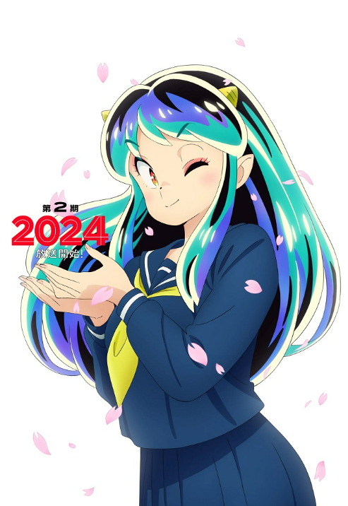

Nửa sau của Anime Urusei Yatsura sẽ lên sóng vào năm 2024
Thứ 6, 12/08/2023, 00:00 (GMT+7)

Nửa đầu của bộ phim đã kết thúc vào 23/03/2023. Anime được công chiếu vào tháng 10 năm 2022.
Anime sẽ được chiếu trong nửa năm (hai Mùa liên tiếp). Toàn bộ Anime sẽ được chuyển thể từ những câu chuyện được chọn từ Manga.
Takahiro Kamei sẽ đảm nhận vai trò đạo diễn cho anime. Masaru Yokoyama sẽ soạn nhạc.
Câu chuyện được mô tả:
Bộ phim hài lãng mạn về cậu học sinh cấp ba Ataru Moroboshi gặp nàng công chúa của bộ tộc Quỷ là Lum Invader. Câu chuyện bắt đầu khi hành tinh Quỷ yêu cầu con người cùng tham gia vào một cuộc thi đuổi bắt, và tất nhiên nam chính của chúng ta chính là người được chọn tham gia cuộc thi này. Luật thi đấu rất đơn giản, Ataru có 10 ngày để chạm được vào sừng của Lum, nếu thất bại, Trái Đất sẽ bị Quỷ xâm chiếm!
Bộ Manga được đăng tải trên tạp chí Weekly Shonen Sunday của Shogakukan từ năm 1978 đến năm 1987.
Bộ truyện đã truyền cảm hứng cho một bộ Anime truyền hình kéo dài từ năm 1981 đến năm 1986, nhiều Movie Anime và một OVA.
Tin Hot
Anime Masamune-kun no Revenge R Mùa 2 bị trì hoãn 3 tháng đến tháng 7 do COVID-19
Anime Tensei shitara Ken deshita sẽ có Mùa 2